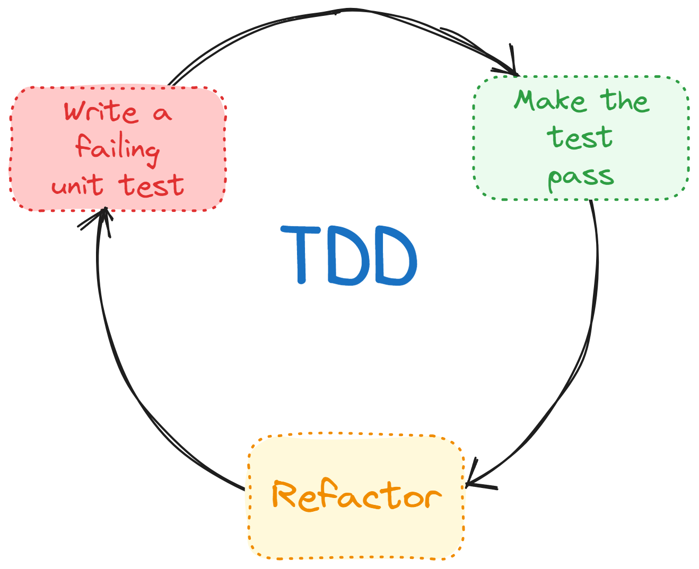

Wstęp do TDD#
Test-Driven Development (TDD) to technika tworzenia oprogramowania sterowana przez testy:
Utrzymujemy kompletny zestaw testów programisty (Programmer Tests)
Kod nie powinien trafić do produkcji, jeśli nie ma powiązanych testów
Najpierw piszemy testy!!!
Testy określają, jaki kod powinniśmy napisać
Testy programisty#
Testy programisty, to testy pisane i wykonywane przez programistów, aby upewnić się, że pojedyncze jednostki lub komponenty ich kodu działają poprawnie.
Sa podobne do testów jednostkowych, ale tworzone z innego powodu:
Testy jednostkowe tworzone są w celu sprawdzenia, czy napisany już kod działa
Testy programisty definiują, co to znaczy, że kod działa - definiują wymagania dla kodu, który ma być napisany
Testy programisty nazywane są w ten sposób również w celu odróżnienia od testów tworzonych przez klienta, których zadaniem jest sprawdzenie, czy system działa prawidłowo z punktu widzenia użytkownika.
Pisząc i wykonując te testy, programiści mogą wcześnie wykrywać błędy, poprawiać jakość kodu i zapewniać, że ich oprogramowanie pozostaje niezawodne i łatwe w utrzymaniu.
Używanie TDD oznacza teoretycznie, że dysponujemy kompletnym zestawem testów. Dzieje się tak, ponieważ nie może istnieć kod, jeśli nie istnieje test, który ten kod powinien przejść. Piszemy test, a potem (i nie wcześniej) piszemy kod, który jest testowany przez ten test.
Important
W systemie nie powinien istnieć kod, który nie został napisany w odpowiedzi na test.
Jeśli mamy do zaimplementowania jakiś fragment funkcjonalności, to najpierw tworzymy kod testu, który definiuje wymagania, a dopiero potem implementujemy samą funkcjonalność. Tworzymy test, a następnie piszemy tylko tyle kodu, żeby test mógł przejść.
Testy określają, jaki kod powinniśmy napisać. Pisząc tylko kod wymagany do przejścia testu ograniczamy ilość kodu do napisania. Do weryfikacji testu tworzymy najprostszy, działający kod. Ten kod może być później zrefaktoryzowany.
Trzy prawa TDD#
TDD zakłada pisanie testów jednostkowych na początku, przed napisanie kodu produkcyjnego.
Możemy zdefiniować trzy podstawowe prawa TDD:
Nie wolno pisać produkcyjnego kodu, dopóki nie napiszesz najpierw nieudanego testu jednostkowego.
Oznacza to, że przed dodaniem jakiejkolwiek funkcjonalności do aplikacji, programista musi najpierw napisać test, który nie przejdzie, ponieważ jeszcze nie ma odpowiedniej implementacji.
Nie wolno pisać więcej testów jednostkowych, niż jest to absolutnie konieczne, aby test nie przeszedł.
Ten punkt kładzie nacisk na minimalizm w pisaniu testów. Testy powinny być jak najprostsze i testować tylko jedną rzecz na raz, aby ułatwić identyfikację problemów.
Nie wolno pisać więcej kodu produkcyjnego, niż jest to absolutnie konieczne, aby test przeszedł.
Oznacza to, że programista powinien napisać tylko tyle kodu, ile jest konieczne, aby test przeszedł. Nadmiarowy kod jest unikany, a refaktoryzacja jest wykonywana na późniejszym etapie, aby utrzymać kod czystym i zrozumiałym.
Te trzy prawa zamykają się w cyklu, który trwa prawdopodobnie kilkadziesiąt sekund. Testy i kod produkcyjny są pisane razem, przy czym testy są pisane kilka sekund wcześniej niż kod produkcyjny.
Important
Kod testów jest tak samo ważny, jak kod produkcyjny. Kod testów jest kodem, który musi być utrzymywany, czytany i zrozumiany przez innych programistów. Taki kod podlega również refaktoryzacji.
Cykl Red-Green-Refactor#
Aplikacja TDD jest rozwijana w mikro-cyklach:
Napisz test
Napisz tyle kodu, aby test został spełniony
Zrefaktoryzuj kod do najprostszej implementacji funkcjonalności określonej przez test (Refactor to Clean Code)
Ten cykl nazywa się cyklem Red-Green-Refactor.
{kind=link}

Zalety i wady TDD#
Stosując TDD mamy natychmiastowy feedback dotyczący jakości zarówno implementacji (“Czy to działa?”), jak i projektu (“Czy to jest dobrze zaprojektowane?”).
Pisząc testy programisty:
Definiujemy kryteria akceptacji dla następnego fragmentu kodu produkcyjnego, który będzie utworzony w odpowiedzi na test
Programista staje się klientem własnego kodu
Promujemy implementację nakierowaną na interfejsy. Korzystamy z luźno powiązanych komponentów (loosly-coupled), aby łatwiej testować obiekty w izolacji.
Dodajemy wykonywalny opis, co tworzony kod robi. Tworzymy kompilowalną i uruchamialną dokumentację funkcjonalności kodu.
Tworzymy jednocześnie zestaw testów regresyjnych
Wykonując testy:
Wyłapujemy błędy, kiedy kontekst dla tworzonego kodu jest jeszcze świeży
Dostajemy informację zwrotną, czy już zakończyliśmy tworzenie danej funkcjonalności - unikamy tym samym over-engineering’u aplikacji
Zalety TDD#
Wyższa jakość kodu: Regularne pisanie testów prowadzi do bardziej niezawodnego i stabilnego kodu. Testy pomagają wykryć błędy we wczesnych etapach.
Lepsza architektura i projekt: TDD wymusza pisanie modularnego, łatwo testowalnego kodu. Ponieważ testujesz małe jednostki, kod staje się bardziej zrozumiały i łatwiejszy do utrzymania.
Szybsze wykrywanie błędów: Dzięki testom jednostkowym błędy są wykrywane wcześniej w cyklu rozwoju, co pozwala na szybsze i tańsze ich naprawienie.
Dokumentacja: Testy działają jako dokumentacja dla kodu. Inni programiści mogą szybko zrozumieć, jak kod działa, przeglądając testy.
Większa pewność wprowadzania zmian: Programiści mogą wprowadzać zmiany lub refaktoryzować kod, mając pewność, że testy wykryją, jeśli coś pójdzie nie tak.
Wady TDD#
Czasochłonność: Pisanie testów przed kodem może wydłużyć czas potrzebny na opracowanie funkcji. Początkowo może wydawać się, że rozwój przebiega wolniej.
Krzywa uczenia się: Programiści, którzy nie są zaznajomieni z TDD, muszą poświęcić czas na naukę tej metodyki i dostosowanie się do niej.
Nieodpowiednie dla niektórych projektów: W przypadku projektów o wysokim stopniu niepewności lub ciągłych zmian, TDD może być trudniejsze do wdrożenia. Pisanie testów dla zmieniających się wymagań może być frustrujące.
Fokus na testy jednostkowe: Choć TDD skupia się na testach jednostkowych, inne rodzaje testów (np. integracyjne, akceptacyjne) są równie ważne i nie powinny być pomijane.
Potencjalne przeciążenie testami: Jeśli testy są zbyt szczegółowe lub źle napisane, mogą utrudniać wprowadzanie zmian i prowadzić do fałszywych alarmów.
TDD oferuje wiele korzyści, szczególnie w kontekście poprawy jakości kodu i wykrywania błędów na wczesnym etapie. Jednak wprowadzenie TDD wymaga dyscypliny i może wiązać się z pewnymi wyzwaniami, zwłaszcza na początku. Ważne jest, aby znaleźć równowagę i dostosować praktyki TDD do specyficznych potrzeb i charakterystyki projektu.